Monge and Kantorovich Optimal Transport
Why compare distributions?
Modern machine learning repeatedly asks for distances between probability laws:
- empirical data versus a model distribution,
- source versus target domains,
- generated samples versus real samples,
- evolving particle clouds during training.
Optimal transport compares distributions by using the geometry of the ambient space.
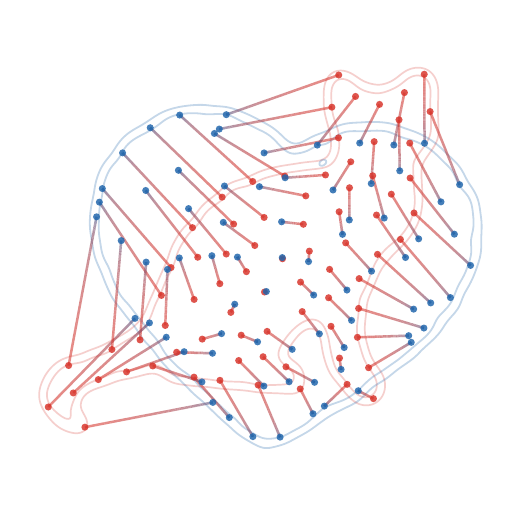
The fitting problem
Data and model distributions. A model produces samples from \alpha_\theta, while observations come from a target law \beta. A geometric fitting objective has the form \min_\theta D(\textcolor{#c7372f}{\alpha_\theta},\textcolor{#226db4}{\beta}), where D is a discrepancy between probability measures.
In practice, both laws are often empirical: \textcolor{#c7372f}{\alpha_\theta^n} =\frac1n\sum_{i=1}^n\delta_{\textcolor{#c7372f}{x_i(\theta)}}, \qquad \textcolor{#226db4}{\widehat\beta_m} =\frac1m\sum_{j=1}^m\delta_{\textcolor{#226db4}{y_j}}. If x_i(\theta)=g_\theta(z_i) for latent samples z_i\sim\zeta, this is the push-forward model \textcolor{#c7372f}{\alpha_\theta}=(g_\theta)_\#\zeta, \qquad \min_\theta D((g_\theta)_\#\zeta,\textcolor{#226db4}{\beta}).
OT chooses D by asking how much effort is needed to move the mass of \alpha_\theta onto \beta.
Computational OT in practice
OT is not a single formula, but a computational toolbox.
Computational ecosystem. The same geometric principle gives sorting algorithms in one dimension, assignment algorithms for equal weights, linear programs for general discrete measures, semi-discrete solvers for continuous-to-discrete maps, and Sinkhorn iterations for differentiable large-scale losses.
This course uses the POT library and the numerical figures of the OT4ML book to keep these regimes visible throughout.
Roadmap: discrete Monge matching
1. Monge matching
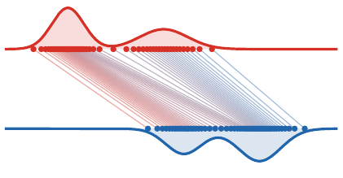
2. Continuous Monge

3. Kantorovich relaxation
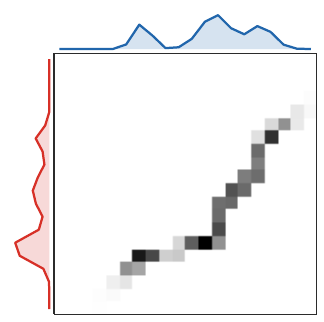
4. Metric structure
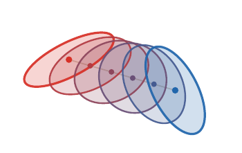
5. Applications

Finite Monge problem
Let x_1,\ldots,x_n and y_1,\ldots,y_n be two point clouds and let c_{i,j}=c(\textcolor{#c7372f}{x_i},\textcolor{#226db4}{y_j}).
Permutation matching. The finite Monge problem is \min_{\sigma \in \mathfrak S_n} \sum_{i=1}^n c_{i,\sigma(i)}. For c(\textcolor{#c7372f}{x},\textcolor{#226db4}{y})=\|\textcolor{#c7372f}{x}-\textcolor{#226db4}{y}\|^p, it matches points while paying a geometric displacement cost.
Equivalently, one minimizes \langle C,\textcolor{#7c5bbd}{P_\sigma}\rangle over permutation matrices (\textcolor{#7c5bbd}{P_\sigma})_{i,j}=\mathbf 1_{\{j=\sigma(i)\}}.
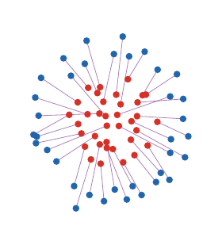
Why this is hard
Combinatorial nature. The feasible set has n! permutations. A brute force search is impossible except for very small n.
For arbitrary cost matrices, this is the linear assignment problem. Classical methods include:
- Hungarian algorithm,
- auction algorithm,
- linear programming and network simplex variants.
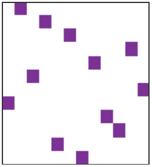
The one-dimensional miracle
For convex costs on the real line, sorting solves the problem.
Monotone matching. If \textcolor{#c7372f}{x_1} \leq \cdots \leq \textcolor{#c7372f}{x_n} and \textcolor{#226db4}{y_1} \leq \cdots \leq \textcolor{#226db4}{y_n}, then for every convex increasing cost h(|\textcolor{#c7372f}{x}-\textcolor{#226db4}{y}|), \sigma(i)=i is an optimal assignment.
The proof follows from the crossing inequality: replacing two crossing segments by non-crossing ones decreases the cost.

Convex versus concave costs in 1D
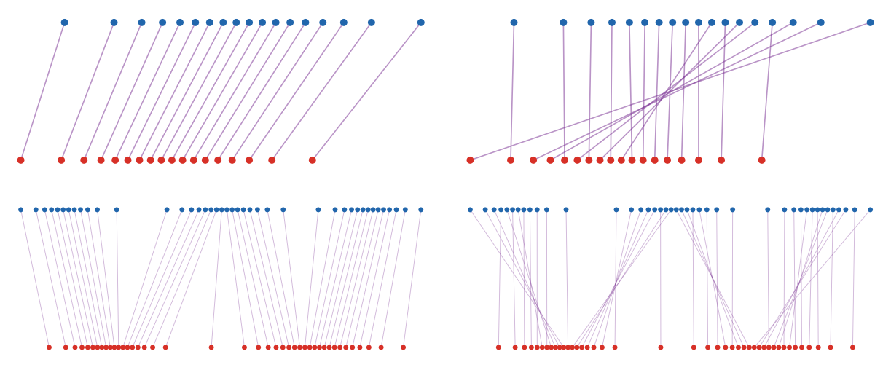
For c_p(\textcolor{#c7372f}{x},\textcolor{#226db4}{y})=|\textcolor{#c7372f}{x}-\textcolor{#226db4}{y}|^p:
- p>1: convexity gives the monotone rearrangement;
- p=1: non-uniqueness can appear;
- 0<p<1: concavity favors different alternating-chain patterns.
The line is special because order is global. Convex costs are solved by sorting; concave costs still exploit the one-dimensional order, but through recursive local matching indicators rather than monotone pairing.
Live panel: one-dimensional costs
Use the controls to compare how the exponent in |\textcolor{#c7372f}{x}-\textcolor{#226db4}{y}|^p changes the matching geometry.
Roadmap: continuous Monge formulation
1. Monge matching
2. Continuous Monge
3. Kantorovich relaxation
4. Metric structure
5. Applications
Probability measures
Probability measure. A probability measure \alpha assigns masses \textcolor{#c7372f}{\alpha}(A)\in[0,1] to measurable sets A\subset X, with \textcolor{#c7372f}{\alpha}(X)=1.
Discrete \textcolor{#c7372f}{\alpha}=\sum_i \textcolor{#c7372f}{a_i}\delta_{\textcolor{#c7372f}{x_i}}
Density d\textcolor{#c7372f}{\alpha}(\textcolor{#c7372f}{x})=\rho_{\textcolor{#c7372f}{\alpha}}(\textcolor{#c7372f}{x})\,d\textcolor{#c7372f}{x}
Random variable \textcolor{#c7372f}{X}:\Omega\to X,\qquad \textcolor{#c7372f}{\alpha}(A)=\mathbb P(\textcolor{#c7372f}{X}\in A)
Push-forward
Push-forward. For a measurable map T from a source space X to a target space Y, the push-forward \textcolor{#7c5bbd}{T_\#}\textcolor{#c7372f}{\alpha} is defined by (\textcolor{#7c5bbd}{T_\#}\textcolor{#c7372f}{\alpha})(B) = \textcolor{#c7372f}{\alpha}(\textcolor{#7c5bbd}{T}^{-1}(B)). Equivalently, for all test functions g, \int_{\textcolor{#226db4}{Y}} g(\textcolor{#226db4}{y})\,d(\textcolor{#7c5bbd}{T_\#}\textcolor{#c7372f}{\alpha})(\textcolor{#226db4}{y}) = \int_{\textcolor{#c7372f}{X}} g(\textcolor{#7c5bbd}{T}(\textcolor{#c7372f}{x}))\,d\textcolor{#c7372f}{\alpha}(\textcolor{#c7372f}{x}).
If \textcolor{#c7372f}{\alpha}=\sum_i \textcolor{#c7372f}{a_i}\delta_{\textcolor{#c7372f}{x_i}}, then \textcolor{#7c5bbd}{T_\#}\textcolor{#c7372f}{\alpha}=\sum_i \textcolor{#c7372f}{a_i}\delta_{\textcolor{#7c5bbd}{T}(\textcolor{#c7372f}{x_i})}.
Density change of variables
When T is a diffeomorphism between open subsets of \mathbb R^d, \rho_{\textcolor{#7c5bbd}{T_\#}\textcolor{#c7372f}{\alpha}}(\textcolor{#7c5bbd}{T}(\textcolor{#c7372f}{x})) = \frac{\rho_{\textcolor{#c7372f}{\alpha}}(\textcolor{#c7372f}{x})}{|\det D\textcolor{#7c5bbd}{T}(\textcolor{#c7372f}{x})|}.
The Jacobian determinant is not cosmetic: compression creates larger density.
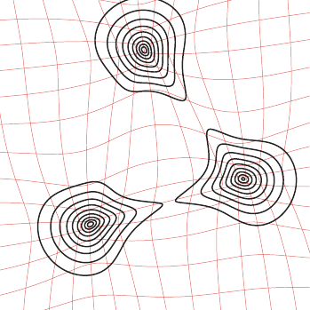
Continuous Monge problem
Monge problem. Given probability measures \alpha on X and \beta on Y, Monge’s formulation is \inf_{\textcolor{#7c5bbd}{T_\#}\textcolor{#c7372f}{\alpha}=\textcolor{#226db4}{\beta}} \int_{\textcolor{#c7372f}{X}} c(\textcolor{#c7372f}{x},\textcolor{#7c5bbd}{T}(\textcolor{#c7372f}{x}))\,d\textcolor{#c7372f}{\alpha}(\textcolor{#c7372f}{x}).
This is a nonlinear constraint: the unknown is a map, and the constraint imposes the entire target distribution.
Discrete versus continuous Monge
If \textcolor{#c7372f}{\alpha}=\frac1n\sum_{i=1}^n\delta_{\textcolor{#c7372f}{x_i}}, \qquad \textcolor{#226db4}{\beta}=\frac1n\sum_{j=1}^n\delta_{\textcolor{#226db4}{y_j}}, then \textcolor{#7c5bbd}{T_\#}\textcolor{#c7372f}{\alpha}=\textcolor{#226db4}{\beta} means that \textcolor{#7c5bbd}{T}(\textcolor{#c7372f}{x_i})=\textcolor{#226db4}{y_{\sigma(i)}} for some permutation \sigma.
Thus finite equal-weight matching is a special case of Monge.
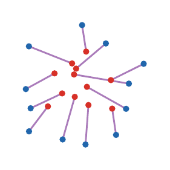
Brenier theorem
Brenier theorem. Let X=Y=\mathbb R^d and c(\textcolor{#c7372f}{x},\textcolor{#226db4}{y})=\|\textcolor{#c7372f}{x}-\textcolor{#226db4}{y}\|^2. If \alpha is absolutely continuous, then the optimal Monge map is unique and \textcolor{#7c5bbd}{T}=\nabla\varphi for a convex function \varphi.
The theorem replaces arbitrary maps by gradients of convex potentials: geometry enters through convexity.
Monge-Ampere equation
If \textcolor{#7c5bbd}{T}=\nabla\varphi is smooth and \alpha,\beta have densities, then \rho_{\textcolor{#c7372f}{\alpha}}(\textcolor{#c7372f}{x}) = \rho_{\textcolor{#226db4}{\beta}}(\nabla\varphi(\textcolor{#c7372f}{x}))\det(D^2\varphi(\textcolor{#c7372f}{x})).
This nonlinear PDE is the analytic form of the mass conservation constraint.
Regularity is geometric
Brenier maps are well behaved under geometric assumptions, but singularities appear when the target geometry is poor.
Caffarelli principle. For quadratic transport, convexity and smooth positive densities are central hypotheses behind regularity of the map \textcolor{#7c5bbd}{T}=\nabla\varphi.
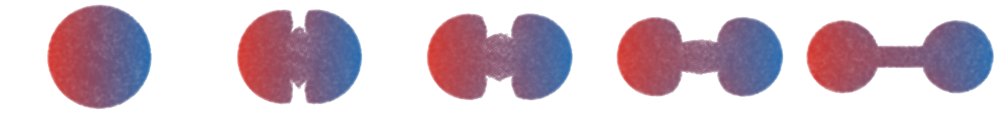
One-dimensional quantiles
CDF and quantile. For a probability \alpha on \mathbb R, F_{\textcolor{#c7372f}{\alpha}}(\textcolor{#c7372f}{x})=\textcolor{#c7372f}{\alpha}((-\infty,\textcolor{#c7372f}{x}]), \qquad F_{\textcolor{#c7372f}{\alpha}}^{-1}(u)=\inf\{\textcolor{#c7372f}{x}:F_{\textcolor{#c7372f}{\alpha}}(\textcolor{#c7372f}{x})\geq u\}.
If \alpha has no atoms, the monotone Monge map from \alpha to \beta is \textcolor{#7c5bbd}{T_{\alpha\to\beta}} = \textcolor{#226db4}{F_\beta^{-1}}\circ \textcolor{#c7372f}{F_\alpha}.
Interactive: quantile interpolation
The 1D Wasserstein geodesic is linear in quantile functions: \textcolor{#7c5bbd}{F_{\alpha_t}^{-1}}(u) =(1-t)\textcolor{#c7372f}{F_\alpha^{-1}(u)} +t\textcolor{#226db4}{F_\beta^{-1}(u)}.
Move the slider to see the density induced by interpolating quantiles.
Live panel: quantile rearrangement
This is the exact one-dimensional Monge solution \textcolor{#7c5bbd}{T}=\textcolor{#226db4}{F_\beta^{-1}}\circ\textcolor{#c7372f}{F_\alpha}.
Histogram equalization
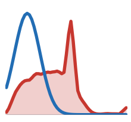
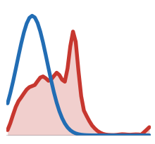
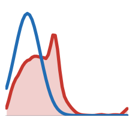
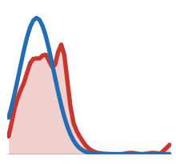
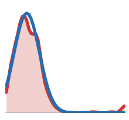
Histogram equalization is a direct application of monotone rearrangement: \textcolor{#7c5bbd}{T} = \textcolor{#226db4}{F_\beta^{-1}}\circ \textcolor{#c7372f}{F_\alpha}.
Here \alpha is the grayscale distribution of the input image and \beta is the target grayscale distribution.
Live panel: histogram equalization
McCann interpolation
Displacement interpolation. If \textcolor{#7c5bbd}{T_\#}\textcolor{#c7372f}{\alpha}=\textcolor{#226db4}{\beta}, the Monge interpolation is \textcolor{#7c5bbd}{\alpha_t}=((1-t)\operatorname{Id}+t\textcolor{#7c5bbd}{T})_\#\textcolor{#c7372f}{\alpha}, \qquad t\in[0,1]. When \textcolor{#7c5bbd}{T} is the quadratic optimal map, this is a constant-speed W_2 geodesic: W_2(\textcolor{#7c5bbd}{\alpha_s},\textcolor{#7c5bbd}{\alpha_t})=|s-t|\,W_2(\textcolor{#c7372f}{\alpha},\textcolor{#226db4}{\beta}).
Live panel: McCann shape interpolation
Color transfer as transport
A color image can be viewed as a cloud in RGB space. Transporting one color distribution onto another gives a palette transfer.
For each input pixel color x\in\mathbb R^3, apply an approximate OT map T(x) in RGB space and display \textcolor{#7c5bbd}{x_t}=(1-t)\textcolor{#c7372f}{x}+t\textcolor{#7c5bbd}{T}(\textcolor{#c7372f}{x}), \qquad \textcolor{#7c5bbd}{\alpha_t}=((1-t)\operatorname{Id}+t\textcolor{#7c5bbd}{T})_\#\textcolor{#c7372f}{\alpha}.
The top row shows the impact on pixels, while the bottom row shows the moving RGB distribution.
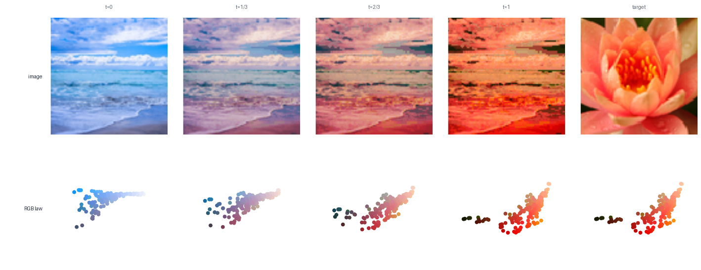
Live panel: color transfer
Gaussian measures in one dimension
Closed form for 1D Gaussians. For \textcolor{#c7372f}{\alpha}=\mathrm N(\textcolor{#c7372f}{m_0},\textcolor{#c7372f}{\sigma_0^2}) and \textcolor{#226db4}{\beta}=\mathrm N(\textcolor{#226db4}{m_1},\textcolor{#226db4}{\sigma_1^2}), \textcolor{#7c5bbd}{T}(\textcolor{#c7372f}{x})=\textcolor{#226db4}{m_1}+\frac{\textcolor{#226db4}{\sigma_1}}{\textcolor{#c7372f}{\sigma_0}}(\textcolor{#c7372f}{x}-\textcolor{#c7372f}{m_0}), and W_2^2(\textcolor{#c7372f}{\alpha},\textcolor{#226db4}{\beta})=(\textcolor{#c7372f}{m_0}-\textcolor{#226db4}{m_1})^2+(\textcolor{#c7372f}{\sigma_0}-\textcolor{#226db4}{\sigma_1})^2.
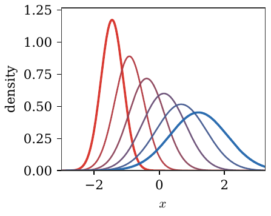
Gaussian measures in dimension d
Gaussian optimal map. For \textcolor{#c7372f}{\alpha}=\mathrm N(\textcolor{#c7372f}{m_0},\textcolor{#c7372f}{\Sigma_0}) and \textcolor{#226db4}{\beta}=\mathrm N(\textcolor{#226db4}{m_1},\textcolor{#226db4}{\Sigma_1}), \textcolor{#7c5bbd}{T}(\textcolor{#c7372f}{x})=\textcolor{#226db4}{m_1}+\textcolor{#7c5bbd}{A}(\textcolor{#c7372f}{x}-\textcolor{#c7372f}{m_0}), where \textcolor{#7c5bbd}{A}=\textcolor{#c7372f}{\Sigma_0}^{-1/2}\big(\textcolor{#c7372f}{\Sigma_0}^{1/2}\textcolor{#226db4}{\Sigma_1}\textcolor{#c7372f}{\Sigma_0}^{1/2}\big)^{1/2}\textcolor{#c7372f}{\Sigma_0}^{-1/2}.
The linear part A is symmetric positive definite: it is a Brenier map.
Gaussian maps and Riccati equations
The Gaussian formula is also a computational statement: the Brenier linear part is the symmetric positive definite solution of a matrix equation.
Riccati viewpoint. The covariance constraint \textcolor{#7c5bbd}{T_\#}\mathrm N(\textcolor{#c7372f}{m_0},\textcolor{#c7372f}{\Sigma_0})=\mathrm N(\textcolor{#226db4}{m_1},\textcolor{#226db4}{\Sigma_1}) imposes \textcolor{#7c5bbd}{A}\textcolor{#c7372f}{\Sigma_0}\textcolor{#7c5bbd}{A}=\textcolor{#226db4}{\Sigma_1},\qquad \textcolor{#7c5bbd}{A}=\textcolor{#7c5bbd}{A}^\top\succeq0. This is an algebraic Riccati equation, whose unique symmetric positive solution is \textcolor{#7c5bbd}{A}=\textcolor{#c7372f}{\Sigma_0}^{-1/2} \big(\textcolor{#c7372f}{\Sigma_0}^{1/2}\textcolor{#226db4}{\Sigma_1}\textcolor{#c7372f}{\Sigma_0}^{1/2}\big)^{1/2} \textcolor{#c7372f}{\Sigma_0}^{-1/2}.
This is one reason Gaussian OT is a useful test case: the nonlinear Monge problem collapses to matrix square roots.
Interactive: Gaussian geodesic
For Gaussian measures, the W_2 geodesic remains Gaussian. In one dimension, m_t=(1-t)m_0+tm_1, \qquad \sigma_t=(1-t)\sigma_0+t\sigma_1. In higher dimension, \Sigma_t=((1-t)I+tA)\Sigma_0((1-t)I+tA).
Move the slider to see the density and the corresponding pointwise affine map.
Live panel: Gaussian maps
Bures metric
The covariance contribution to Gaussian W_2 is the Bures metric: W_2^2(\textcolor{#c7372f}{\alpha},\textcolor{#226db4}{\beta}) =\|\textcolor{#c7372f}{m_0}-\textcolor{#226db4}{m_1}\|^2+B^2(\textcolor{#c7372f}{\Sigma_0},\textcolor{#226db4}{\Sigma_1}), B^2(\textcolor{#c7372f}{\Sigma_0},\textcolor{#226db4}{\Sigma_1}) =\operatorname{tr}\big(\textcolor{#c7372f}{\Sigma_0}+\textcolor{#226db4}{\Sigma_1}-2(\textcolor{#c7372f}{\Sigma_0}^{1/2}\textcolor{#226db4}{\Sigma_1}\textcolor{#c7372f}{\Sigma_0}^{1/2})^{1/2}\big).
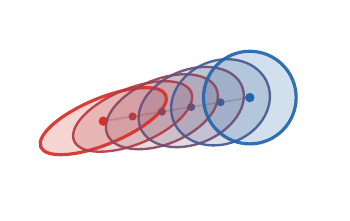
Geometry of covariance matrices
For 2\times 2 covariances, the positive semidefinite cone can be drawn explicitly. Bures geodesics follow a non-Euclidean matrix geometry.
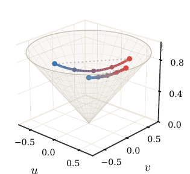
Roadmap: Kantorovich relaxation
1. Monge matching
2. Continuous Monge
3. Kantorovich relaxation
4. Metric structure
5. Applications
Why relax Monge?
Monge maps can fail to exist when mass must split.
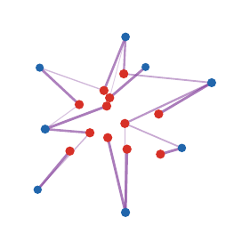
Couplings
Coupling. A coupling between \alpha and \beta is a probability measure \pi on X\timesY such that (\textcolor{#c7372f}{P_X})_\#\textcolor{#7c5bbd}{\pi}=\textcolor{#c7372f}{\alpha}, \qquad (\textcolor{#226db4}{P_Y})_\#\textcolor{#7c5bbd}{\pi}=\textcolor{#226db4}{\beta}. The set of all couplings is denoted \Gamma(\textcolor{#c7372f}{\alpha},\textcolor{#226db4}{\beta}).
The product coupling \textcolor{#c7372f}{\alpha}\otimes\textcolor{#226db4}{\beta} always belongs to \Gamma(\textcolor{#c7372f}{\alpha},\textcolor{#226db4}{\beta}), so the feasible set is nonempty.
Live panel: coupling geometry
Discrete couplings
For discrete measures \textcolor{#c7372f}{\alpha}=\sum_i a_i\delta_{\textcolor{#c7372f}{x_i}}, \qquad \textcolor{#226db4}{\beta}=\sum_j b_j\delta_{\textcolor{#226db4}{y_j}}, a coupling is a nonnegative matrix P satisfying \textcolor{#7c5bbd}{P}\mathbb 1_m=\textcolor{#c7372f}{a}, \qquad \textcolor{#7c5bbd}{P}^\top\mathbb 1_n=\textcolor{#226db4}{b}. This feasible polytope is denoted U(\textcolor{#c7372f}{a},\textcolor{#226db4}{b})=\{\textcolor{#7c5bbd}{P}\geq0:\textcolor{#7c5bbd}{P}\mathbb 1_m=\textcolor{#c7372f}{a},\ \textcolor{#7c5bbd}{P}^\top\mathbb 1_n=\textcolor{#226db4}{b}\}.

Live panel: transport matrices
The matrix view makes row and column mass constraints visible.
Three coupling regimes
The same Kantorovich object appears in three numerical regimes.
Discrete, semi-discrete, continuous. Discrete OT optimizes a matrix P. Semi-discrete OT optimizes Laguerre cells when one measure has a density and the other is finitely supported. Continuous OT studies a measure \pi on X\timesY and often recovers a map through regularity.
The later decks revisit these regimes with duality, Sinkhorn scaling, and gradient-flow interpretations.
Kantorovich problem
Kantorovich formulation. The relaxed optimal transport problem is \mathcal L_c(\textcolor{#c7372f}{\alpha},\textcolor{#226db4}{\beta}) = \inf_{\textcolor{#7c5bbd}{\pi}\in\Gamma(\textcolor{#c7372f}{\alpha},\textcolor{#226db4}{\beta})} \int_{\textcolor{#c7372f}{X}\times\textcolor{#226db4}{Y}} c(\textcolor{#c7372f}{x},\textcolor{#226db4}{y})\,d\textcolor{#7c5bbd}{\pi}(\textcolor{#c7372f}{x},\textcolor{#226db4}{y}).
For finite measures, this is the linear program \min_{\textcolor{#7c5bbd}{P}\geq 0}\sum_{i,j} \textcolor{#7c5bbd}{P}_{i,j}C_{i,j} \quad\text{s.t.}\quad \textcolor{#7c5bbd}{P}\mathbb 1_m=\textcolor{#c7372f}{a}, \ \textcolor{#7c5bbd}{P}^\top\mathbb 1_n=\textcolor{#226db4}{b}.
Live panel: transport plans
Changing the cost and marginals changes which entries of the plan become active.
Product versus optimal coupling
The product plan is the independent coupling: (\textcolor{#c7372f}{\alpha}\otimes\textcolor{#226db4}{\beta})(A\times B)=\textcolor{#c7372f}{\alpha}(A)\textcolor{#226db4}{\beta}(B), \qquad \textcolor{#7c5bbd}{P^\otimes}_{i,j}=\textcolor{#c7372f}{a_i}\textcolor{#226db4}{b_j}. The OT plan instead minimizes \langle C,\textcolor{#7c5bbd}{P}\rangle over U(\textcolor{#c7372f}{a},\textcolor{#226db4}{b}).
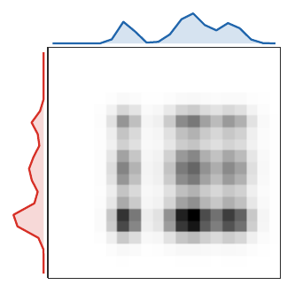
Live panel: splitting versus product couplings
The product coupling is feasible but usually diffuse; the optimal plan concentrates on cost-effective pairs.
Exact relaxation for equal weights
Birkhoff-von Neumann theorem. The set of bistochastic matrices is the convex hull of permutation matrices: \{\textcolor{#7c5bbd}{P}\geq 0: \textcolor{#7c5bbd}{P}\mathbb 1=\mathbb 1/n, \textcolor{#7c5bbd}{P}^\top\mathbb 1=\mathbb 1/n\} =\operatorname{conv}\{\textcolor{#7c5bbd}{P_\sigma}:\sigma\in\mathfrak S_n\}. Here (\textcolor{#7c5bbd}{P_\sigma})_{i,j}=\frac1n\mathbf 1_{\{j=\sigma(i)\}} has the prescribed uniform marginals.
Hence, for equal weights, Kantorovich gives the same value as Monge whenever a permutation solution is required.
Extreme points give exactness
The exactness mechanism is purely convex-geometric. For a compact polytope C and a linear functional \langle A,P\rangle, \arg\min_{P\in C}\langle A,P\rangle \cap \operatorname{Extr}(C)\neq\varnothing. Indeed, a minimizer exists by compactness. If it is not extreme, write P=(Q+R)/2 with Q\neq R; linearity shows that Q and R are also minimizers. For a polytope, iterating this splitting reaches an extreme minimizer.
For the bistochastic polytope, \operatorname{Extr}\{P\geq0:P\mathbf 1=\mathbf 1/n,\ P^\top\mathbf 1=\mathbf 1/n\} =\{P_\sigma:\sigma\in\mathfrak S_n\}. Thus the relaxed LP has a permutation optimizer.
Live panel: Birkhoff polytope
Cycle certificate
The proof finds a cycle in the support graph of a non-extreme bistochastic matrix. Moving mass around it decomposes P into two feasible matrices.
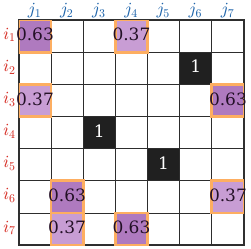
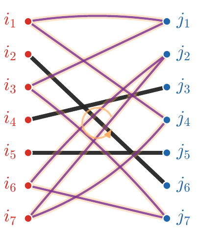
Algorithms at a glance
Algorithmic landscape. - Generic LP or network simplex for discrete OT. - Hungarian or auction methods for assignment. - Sorting for one-dimensional convex costs. - Semi-discrete methods when one measure is continuous and the other is discrete. - Entropic Sinkhorn iterations in the next deck.
The right algorithm depends on the structure of the measures and the cost.
From LP to specialized solvers
Generic linear programming is only one possible computational route; problem-specific algorithms are often decisive.
- assignment: Hungarian and auction methods,
- graph costs: network simplex and sparse flows,
- Euclidean low dimension: geometric structure,
- entropic OT: repeated matrix scaling,
- semi-discrete OT: smooth concave dual maximization.
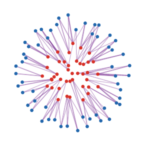
Roadmap: metric structure
1. Monge matching
2. Continuous Monge
3. Kantorovich relaxation
4. Metric structure
5. Applications
Wasserstein distances
Wasserstein distance. For p\geq 1 and a metric d on X, W_p(\textcolor{#c7372f}{\alpha},\textcolor{#226db4}{\beta}) = \left(\inf_{\textcolor{#7c5bbd}{\pi}\in\Gamma(\textcolor{#c7372f}{\alpha},\textcolor{#226db4}{\beta})} \int d(\textcolor{#c7372f}{x},\textcolor{#226db4}{y})^p\,d\textcolor{#7c5bbd}{\pi}(\textcolor{#c7372f}{x},\textcolor{#226db4}{y})\right)^{1/p}. The finite-moment condition is \int d(\textcolor{#c7372f}{x},x_0)^p\,d\textcolor{#c7372f}{\alpha}(\textcolor{#c7372f}{x})<+\infty for one, hence every, x_0\in X.
The cost is now tied to the geometry of the ground space.
Metric theorem
Metric property. On probability measures with finite p-moment, W_p is a distance. In particular, W_p(\textcolor{#c7372f}{\alpha},\gamma) \leq W_p(\textcolor{#c7372f}{\alpha},\textcolor{#226db4}{\beta})+W_p(\textcolor{#226db4}{\beta},\gamma).
Proof idea: glue optimal couplings for (\textcolor{#c7372f}{\alpha},\textcolor{#226db4}{\beta}) and (\textcolor{#226db4}{\beta},\gamma), then apply Minkowski to the induced pair (X,Z).
Triangle inequality by gluing
The proof mechanism is important: Wasserstein geometry is stable because transport plans can be pasted through their common marginal.
Gluing argument. Let \textcolor{#7c5bbd}{\pi^{01}}\in\Gamma(\textcolor{#c7372f}{\alpha_0},\textcolor{#7c5bbd}{\alpha_1}) and \textcolor{#7c5bbd}{\pi^{12}}\in\Gamma(\textcolor{#7c5bbd}{\alpha_1},\textcolor{#226db4}{\alpha_2}). The gluing lemma gives a measure \textcolor{#7c5bbd}{\eta}\in\mathcal P(X^3) such that (\textcolor{#c7372f}{x_0},\textcolor{#7c5bbd}{x_1})_\#\textcolor{#7c5bbd}{\eta}=\textcolor{#7c5bbd}{\pi^{01}} and (\textcolor{#7c5bbd}{x_1},\textcolor{#226db4}{x_2})_\#\textcolor{#7c5bbd}{\eta}=\textcolor{#7c5bbd}{\pi^{12}}. Then \textcolor{#7c5bbd}{\pi^{02}}=(\textcolor{#c7372f}{x_0},\textcolor{#226db4}{x_2})_\#\textcolor{#7c5bbd}{\eta} is admissible and W_p(\textcolor{#c7372f}{\alpha_0},\textcolor{#226db4}{\alpha_2}) \leq \left(\int d(\textcolor{#c7372f}{x_0},\textcolor{#226db4}{x_2})^p\,d\textcolor{#7c5bbd}{\eta}\right)^{1/p} \leq W_p(\textcolor{#c7372f}{\alpha_0},\textcolor{#7c5bbd}{\alpha_1})+W_p(\textcolor{#7c5bbd}{\alpha_1},\textcolor{#226db4}{\alpha_2}).
Discrete gluing formula
The finite proof used in the reference slides is the same idea written as a three-index coupling. If P\in U(\textcolor{#c7372f}{a},\textcolor{#7c5bbd}{b}) and Q\in U(\textcolor{#7c5bbd}{b},\textcolor{#226db4}{c}), set S_{i,j,k}= \begin{cases} \dfrac{P_{i,j}Q_{j,k}}{b_j}, & b_j>0,\\[0.55em] 0, & b_j=0. \end{cases} Then \sum_k S_{i,j,k}=P_{i,j},\qquad \sum_i S_{i,j,k}=Q_{j,k}, \qquad R_{i,k}:=\sum_j S_{i,j,k}\in U(\textcolor{#c7372f}{a},\textcolor{#226db4}{c}). Summing out the intermediate index j gives the admissible coupling used for the triangle inequality.
Live panel: gluing couplings
Convergence in law
Topology. On a compact metric space, convergence in W_p is equivalent to weak convergence of probability measures: W_p(\textcolor{#7c5bbd}{\alpha_n},\textcolor{#c7372f}{\alpha})\to 0 \quad\Longleftrightarrow\quad \int f\,d\textcolor{#7c5bbd}{\alpha_n}\to\int f\,d\textcolor{#c7372f}{\alpha} \quad\forall f\in C(X).
On noncompact spaces, finite moments must also be controlled.
Dual potentials as witnesses
Kantorovich duality exposes potentials as certificates: \mathcal L_c(\textcolor{#c7372f}{\alpha},\textcolor{#226db4}{\beta}) = \sup_{f(\textcolor{#c7372f}{x})+g(\textcolor{#226db4}{y})\leq c(\textcolor{#c7372f}{x},\textcolor{#226db4}{y})} \int f\,d\textcolor{#c7372f}{\alpha}+ \int g\,d\textcolor{#226db4}{\beta}.
At optimality, transported mass lives where f(\textcolor{#c7372f}{x})+g(\textcolor{#226db4}{y})=c(\textcolor{#c7372f}{x},\textcolor{#226db4}{y}).
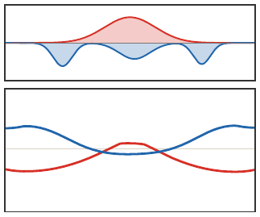
Roadmap: applications
1. Monge matching
2. Continuous Monge
3. Kantorovich relaxation
4. Metric structure
5. Applications
OT application gallery
The same mathematical distance appears in very different data tasks.
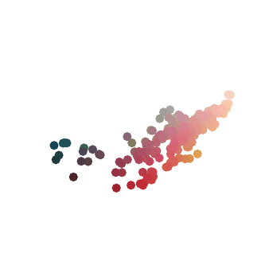
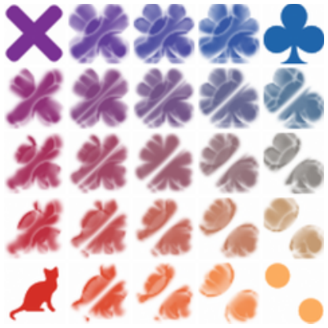
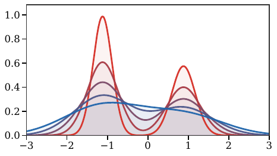
Color transfer, barycenters, and gradient flows all reuse the same core ideas: coupling, geometry, and displacement.
Application examples
Concrete data modalities make the abstract transport formalism easier to recognize.
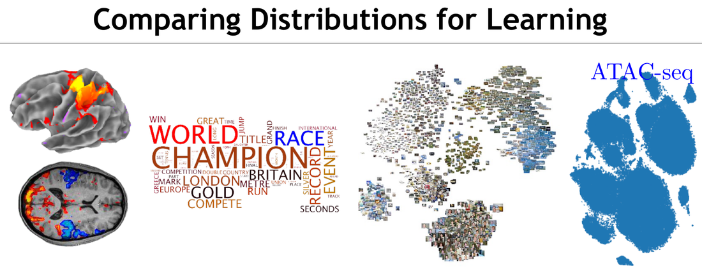
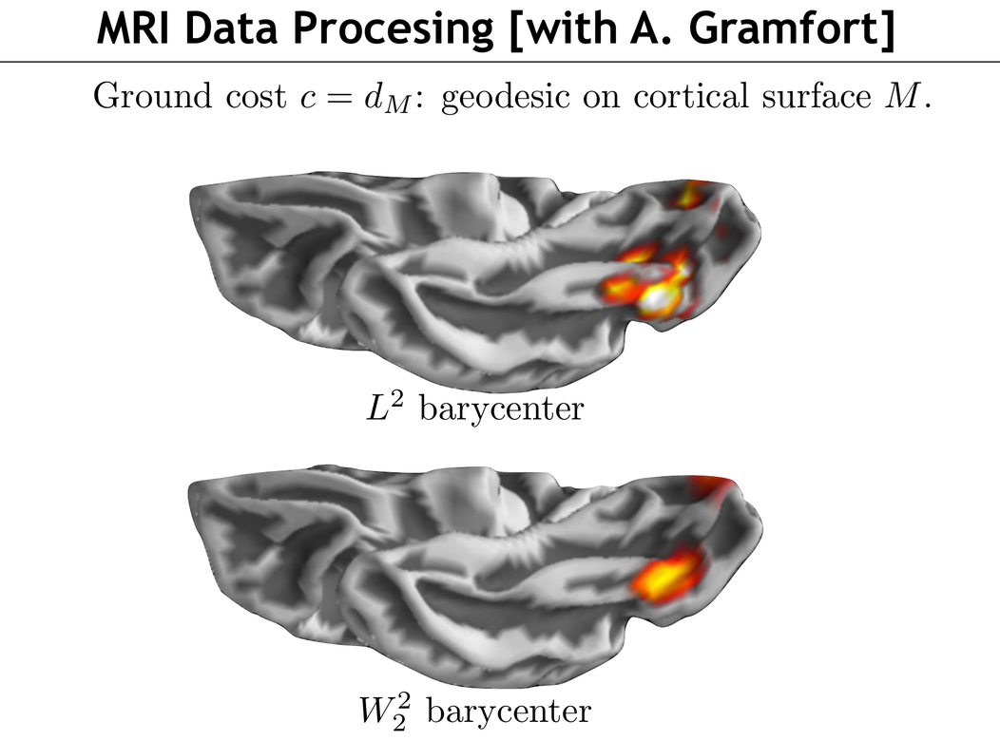
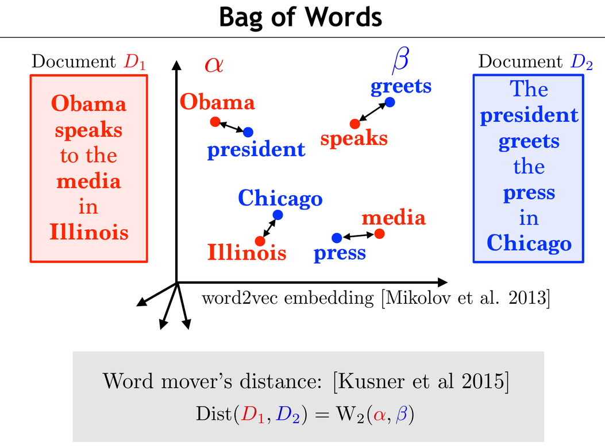
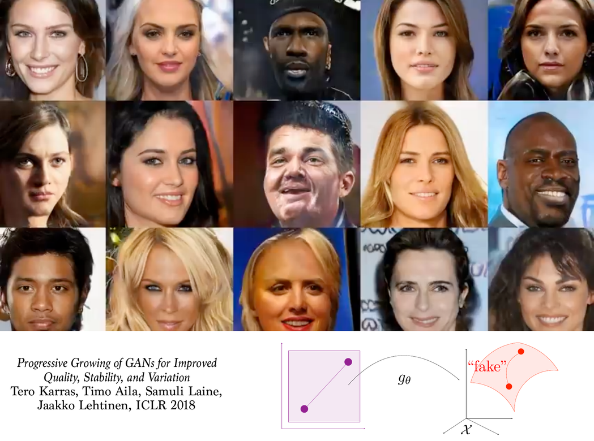
ATAC-seq and single-cell data, cortical-surface MRI processing, bag-of-words document comparison, and image generation all reduce to comparing empirical laws with geometry.
Quantitative CLT viewpoint
The central limit theorem (CLT) says that rescaled sums converge in law: Y_n=\frac{X_1+\cdots+X_n}{\sqrt n} \Rightarrow \mathrm N(0,1) when \mathbb E(X)=0 and \mathbb E(X^2)=1.
Writing \mu_n=\operatorname{Law}(Y_n) and \gamma=\mathrm N(0,1), a Berry-Esseen type estimate in Wasserstein distance is W_1(\mu_n,\gamma)\leq \frac{C\,\mathbb E(|X|^3)}{\sqrt n}.
Wasserstein distances quantify how fast this convergence happens.
Live panel: quantitative CLT
Gradient flows
Wasserstein geometry turns variational problems over measures into PDEs. The JKO scheme is \textcolor{#c7372f}{\alpha^{k+1}}\in\arg\min_{\textcolor{#c7372f}{\alpha}} \frac{1}{2\tau}W_2^2(\textcolor{#c7372f}{\alpha},\textcolor{#c7372f}{\alpha^k})+\mathcal F(\textcolor{#c7372f}{\alpha}).
This is the implicit Euler scheme in the metric space of measures.
Barycenters
Wasserstein barycenter. Given measures (\beta_s)_s and weights (\lambda_s)_s, a barycenter solves \min_{\textcolor{#c7372f}{\alpha}} \sum_s \lambda_s W_2^2(\textcolor{#c7372f}{\alpha},\textcolor{#226db4}{\beta_s}).
Live panel: Wasserstein barycenters
Barycenters are the first place where transport becomes a geometric averaging operation.
Generative models
One-step generative models seek a map g_\theta such that \textcolor{#c7372f}{(g_\theta)_\#\zeta} \approx \textcolor{#226db4}{\beta}, where \zeta is a latent distribution and \beta is the data distribution.
OT, Sinkhorn, MMD, and sliced-Wasserstein losses provide training discrepancies.
Summary
What this deck establishes. Optimal transport starts from matching, becomes Monge’s map problem, relaxes to couplings, and yields Wasserstein geometry.
MapsMonge and Brenier
PlansKantorovich and LP
GeometryWasserstein metrics
Next deck
The next presentation develops entropic regularization: \min_{\textcolor{#7c5bbd}{\pi}\in\Gamma(\textcolor{#c7372f}{\alpha},\textcolor{#226db4}{\beta})} \int c\,d\textcolor{#7c5bbd}{\pi} + \varepsilon\operatorname{KL}(\textcolor{#7c5bbd}{\pi}\mid \textcolor{#c7372f}{\alpha}\otimes\textcolor{#226db4}{\beta}), leading to Sinkhorn iterations and differentiable transport losses.
OT4ML - Monge and Kantorovich